Two test pieces, T-c and T-h, and five stacking sequences: knitted sheets and knitted cords that stand in space as the HexOct structure
DICTO proposed the Knitted HexOct: a multi-layer knitted fabric whose sheets are close-packed layers and whose links join each node to the 3 nodes of the next sheet that its ball touches, so that c and h are carried by the links. These patterns make the two smallest pieces that show c against h, and then any stacking sequence. Each piece is the structure itself in three dimensions: the sheets are layers A, B, C (or A, B, A′), the knitted cords (links) are the bonds between them, and the cells closed off by sheets and cords are tetrahedra and octahedra, the pieces of the HexOct c-tile or h-tile. There is no colourwork: the chart only tells you where the node stitches are.
Knit a garter-stitch swatch of 30 sts × 40 ridges on 3.5 mm needles (one ridge = 2 rows). Lay it flat without stretching and measure S = stitches per 10 cm and R = ridges per 10 cm.
| R / S | M (N = 16) | row spacing error |
|---|---|---|
| 0.85 | 12 | +1.9 % |
| 0.90 | 12 | -3.8 % |
| 0.95 | 13 | -1.2 % |
| 1.00 | 14 | +1.0 % |
| 1.05 | 15 | +3.1 % |
| 1.10 | 15 | -1.6 % |
| 1.15 | 16 | +0.4 % |
For a more exact triangle, larger N: N = 30, M = 26 gives the row spacing to 0.07 %, but a ≈ 14 cm (spec §4).
The patterns below are written for N = 16, M = 14 (cast on 64, 42 ridges, node rows 13, 41, 69). Sizes are given at the reference gauge 22 sts and 22 ridges per 10 cm: a = 7.27 cm, d = 5.94 cm. With your own S, scale every size by 22/S. If your M differs, recompute the node rows from the formula; the node stitches depend on N only.
| K, Kn | knit; knit n stitches |
| NK [X] | node knit: knit the next stitch with the yarn and a 15 cm contrast thread held together; leave both thread ends hanging. This stitch is node X. |
| RS, WS | right side, wrong side (mark the RS: garter looks the same on both) |
| st(s); r | stitch(es); ridge (2 rows of garter) |
| DPN | double-pointed needle |
| i-cord | 3 sts on a DPN: knit 3, slide the sts to the other end, pull the yarn across the back, repeat |
| a, d, ℓ, t | node spacing; sheet spacing √(2/3) a; free cord length a − 1.22 t; sheet thickness |
| A1…A9, B1…B9, C1…C9, A′1…A′9 | nodes: sheet letter, then 1 + i + 3j (node row 1: 1–3, row 2: 4–6, row 3: 7–9) |
| gap 1, gap 2 | the space between sheets 1 and 2, and between sheets 2 and 3 |
Every sheet in this booklet is knitted the same way: garter stitch, 64 sts and 84 rows (42 ridges), with 9 node stitches on rows 13, 41 and 69. Do not stretch or block the sheets. Where a sheet lies in a finished piece is not knitted in: the cords set it.
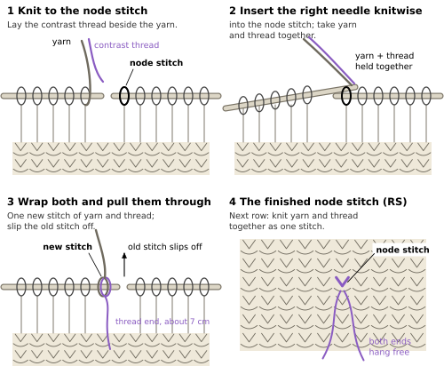
| node | row | ridge | stitch |
|---|---|---|---|
| 1 | 13 | 7 | 9 |
| 2 | 13 | 7 | 25 |
| 3 | 13 | 7 | 41 |
| 4 | 41 | 21 | 17 |
| 5 | 41 | 21 | 33 |
| 6 | 41 | 21 | 49 |
| 7 | 69 | 35 | 25 |
| 8 | 69 | 35 | 41 |
| 9 | 69 | 35 | 57 |
NK [5] makes node 5 of the sheet; on sheet B it is node B5.
Each node stitch carries its contrast thread. Leave the ends hanging until the cords are on: they show you the node and its two neighbours in the ridge, the 3 stitches that a cord is picked up from (on a lower sheet) or sewn to (on an upper sheet). After binding off, check: 9 node stitches, each with its thread.
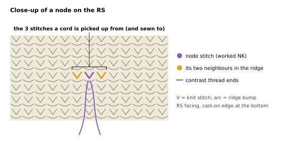
Knit three sheets for T-c (label A, B, C) and three for T-h (label A, B, A′); all six are the same. For a stacking sequence, knit as many sheets as it has and label them with their numbers and letters.
These steps are the same in T-c, T-h and every stack. Each pattern says when to use them.
When the sheets are pulled apart until every cord is taut, the cords stand at 54.7° to the sheets, the sheets lie d = √(2/3) a apart, and sheets and cords close off tetrahedra and octahedra in space. At the reference gauge:
| at 22 sts and 22 ridges per 10 cm (N = 16, M = 14) | |
|---|---|
| node spacing a (= cord length, node to node) | 7.27 cm |
| sheet spacing d = √(2/3) a (mid-plane to mid-plane) | 5.94 cm |
| each sheet (64 sts × 42 ridges) | 29.1 × 19.1 cm |
| node patch in each sheet (node 1 to node 9) | 21.8 × 12.6 cm |
| one step between sheets (seen from above) | 8 st, 4⅔ ridges = a/√3 = 4.2 cm |
| height of a piece of n sheets | (n − 1) d + 0.35 cm |
Lay the sheet RS up in its frame, cast-on edge towards you. Lace it to the frame all round with strong thread, firm but not stretched. Then measure the node triangles (1-2-4, 2-4-5, 2-3-5, …) from node centre to node centre: each side should be a = 7.3 cm. Ease the lacing until they are.
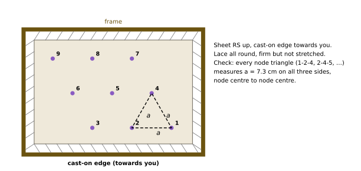
Cord length. Every cord is a 3-stitch i-cord of the same free length ℓ = a − 1.22 t, measured between the two sheet faces (t = sheet thickness; measure it on a sheet with a ruler under light pressure). At the reference gauge a = 72.7 mm: ℓ = 69.1 mm for t = 3.0 mm, 68.4 mm for 3.5 mm, 67.8 mm for 4.0 mm. Cut a card strip of length ℓ (or use the one on the card template). Knit the first cord to the strip under a light, even pull and count its rows; knit every other cord to the same row count. Equal counts make equal cords.
To work one cord, from node X of the lower sheet:
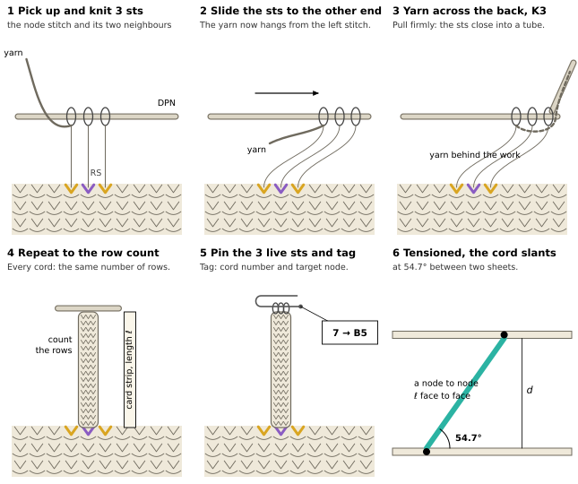
In each pattern's cord table, “top end lies” is where the top of the cord ends up, seen from above, counted from its foot X: st = stitches (+ towards higher stitch numbers), r = ridges (+ towards the bind-off edge). It is a check, not an instruction: the cords find these places themselves when tensioned. Cords whose target would lie outside the 3 × 3 node patch are left out; that is why nodes at the edge of the patch have fewer cords.
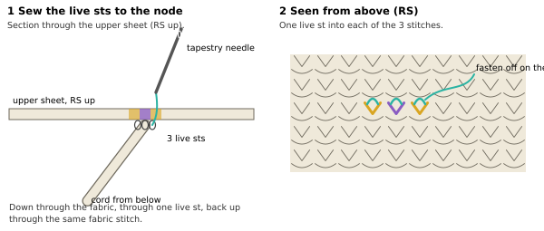
Hang the piece by the frame of the top sheet (two strings from a hook or a rod), sheets horizontal, and let the lower frames hang on the cords. Each frame sinks until all of its cords are taut. Taut cords of equal length allow the greatest spacing only when the sheet sits exactly in its place over the one below (spec §1: any sideways shift t lowers the spacing to at most √(2/3 a² − t²)); so a hanging sheet centres itself. Tap the frames lightly so that they settle. Measure the spacing at the four corners of each frame (expect d = 5.9 cm between the sheets' mid-planes) and cut four posts to the measured length for each gap. Set the posts between the frame corners, outside the node patch, and stand the piece on a table. If a cord is slack while the others are taut, it is too long: unpick its sewn end and work it again to the row count.
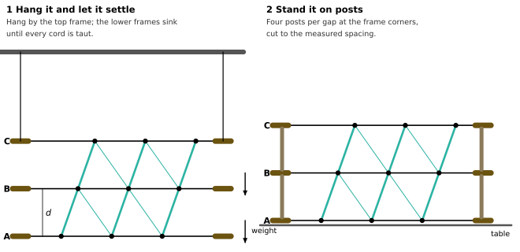
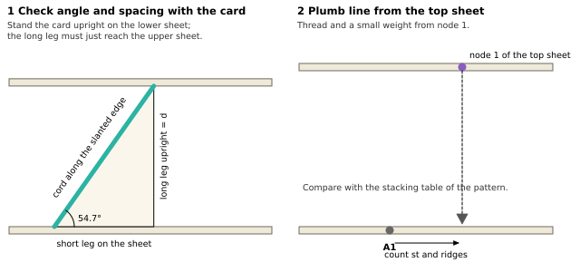
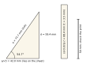
Every closed cell has all its edges of length a: a sheet edge between neighbouring nodes or a cord. A tetrahedron is 3 nodes of one sheet and the one node of the next sheet linked to all three (3 cords). An octahedron is a triangle of 3 nodes below and the opposite triangle above, joined by 6 cords. Each gap of a 3 × 3 patch closes 4 tetrahedra standing on its lower sheet, 4 hanging from its upper sheet and 4 octahedra, whatever the step. In the HexOct tiles of #75 at λ = −1/8, the tile of a middle sheet is: the tetrahedra standing on it and hanging from it (gold in the figures), the upper halves of the octahedra of the gap below and the lower halves of the octahedra of the gap above, cut at the gaps' mid-planes (violet; each half has 3 nodes and the midpoints of its 6 cords). It is the c-tile when the sheet is c and the h-tile when it is h.
Three sheets, each moved on from the one below by the same step: A, then B, then C. The middle sheet B is c: each cord up from a B node runs on in a straight line from a cord coming down into it. This is the start of the cubic stacking 3C. The cells around B are the pieces of the HexOct c-tile (#75, at λ = −1/8). Sizes of every piece are in the table “Sizes of a finished piece” (Techniques); for T-c:
| T-c | |
|---|---|
| sheets · node stitches · cords | 3 · 27 · 42 |
| height (2d + one sheet thickness) | 12.2 cm |
| top sheet C over sheet A | +16 st, +9⅓ ridges (8.4 cm sideways) |
| cells closed by sheets and cords | 16 tetrahedra, 8 octahedra |
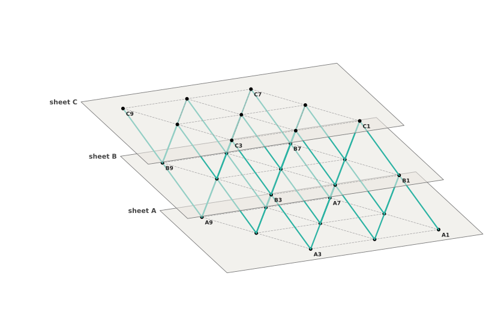
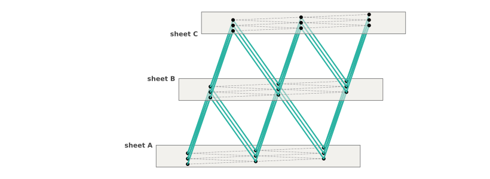
Three sheets knitted as in “The sheet”, tagged A, B and C; yarn for 42 cords; the materials listed at the front for one piece.
The stacking is not knitted in: the cords set it when the piece is tensioned. The table and the plan show where each sheet ends up, so that you can hold each sheet near its place while you sew, and check the piece at the end.
| sheet | place | step from the sheet below | node 1 seen from above, from A1 |
|---|---|---|---|
| A | bottom | reference | |
| B | middle | forward | +8 st, +4⅔ r (4.2 cm) |
| C | top | forward | +16 st, +9⅓ r (8.4 cm) |
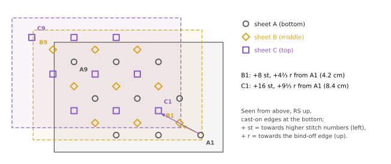
Step 1. Check the three sheets: each has 9 node stitches with a contrast thread, and a tag (A, B, C).
Step 2. Lace sheet A into its frame, RS up, cast-on edge towards you (see “Lacing a sheet into its frame”). Check the node triangles: a = 7.3 cm.
Step 3. Work cords 1–21 from the nodes of sheet A, in the order of the table (see “Making a cord”). Knit each to the same row count; pin its 3 live sts and tag it with its number and target node. Tick each cord off in the “done” column.
| Gap 1: sheet A → sheet B (forward step), cords 1–21 | ||||
|---|---|---|---|---|
| cord | from | to | top end lies | done |
| 1 | A1 | B1 | +8 st, +4⅔ r | ☐ |
| 2 | A2 | B1 | −8 st, +4⅔ r | ☐ |
| 3 | A2 | B2 | +8 st, +4⅔ r | ☐ |
| 4 | A3 | B2 | −8 st, +4⅔ r | ☐ |
| 5 | A3 | B3 | +8 st, +4⅔ r | ☐ |
| 6 | A4 | B1 | 0 st, −9⅓ r | ☐ |
| 7 | A4 | B4 | +8 st, +4⅔ r | ☐ |
| 8 | A5 | B2 | 0 st, −9⅓ r | ☐ |
| 9 | A5 | B4 | −8 st, +4⅔ r | ☐ |
| 10 | A5 | B5 | +8 st, +4⅔ r | ☐ |
| 11 | A6 | B3 | 0 st, −9⅓ r | ☐ |
| Gap 1: sheet A → sheet B (forward step), cords 1–21 | ||||
|---|---|---|---|---|
| cord | from | to | top end lies | done |
| 12 | A6 | B5 | −8 st, +4⅔ r | ☐ |
| 13 | A6 | B6 | +8 st, +4⅔ r | ☐ |
| 14 | A7 | B4 | 0 st, −9⅓ r | ☐ |
| 15 | A7 | B7 | +8 st, +4⅔ r | ☐ |
| 16 | A8 | B5 | 0 st, −9⅓ r | ☐ |
| 17 | A8 | B7 | −8 st, +4⅔ r | ☐ |
| 18 | A8 | B8 | +8 st, +4⅔ r | ☐ |
| 19 | A9 | B6 | 0 st, −9⅓ r | ☐ |
| 20 | A9 | B8 | −8 st, +4⅔ r | ☐ |
| 21 | A9 | B9 | +8 st, +4⅔ r | ☐ |
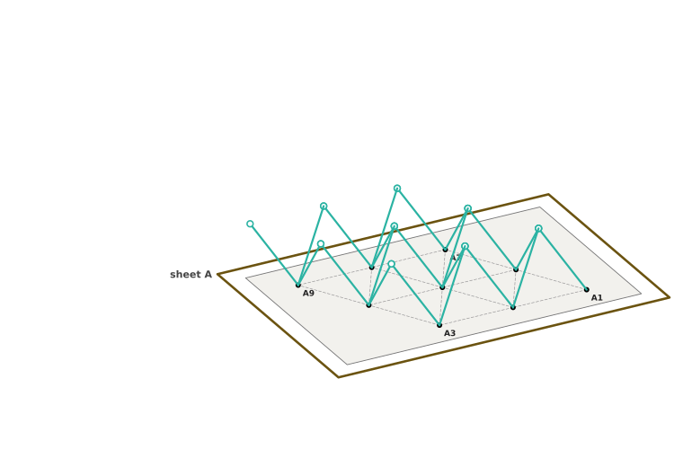
Step 4. Lace sheet B into its frame the same way and hold it over sheet A, about d = 5.9 cm above, with B1 over the point +8 st and +4⅔ ridges from A1 (Figure T-c.3).
Step 5. Sew cords 1–21 to sheet B, node by node (see “Sewing a cord to a node”). Each node of B receives these cords:
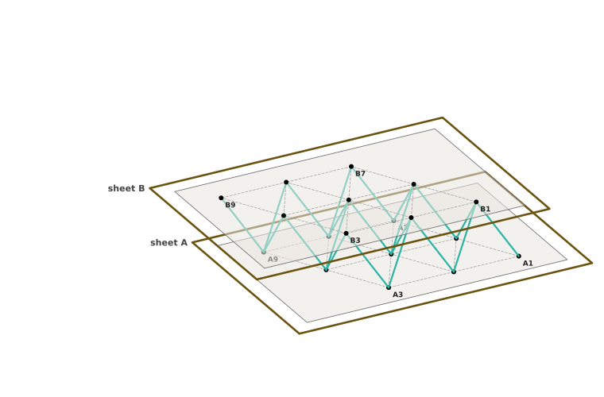
Step 6. Work cords 22–42 from the nodes of sheet B, on its RS (gap 2: forward step), pin and tag them. Their top ends lean on in the same direction as the cords of gap 1: B is c.
| Gap 2: sheet B → sheet C (forward step), cords 22–42 | ||||
|---|---|---|---|---|
| cord | from | to | top end lies | done |
| 22 | B1 | C1 | +8 st, +4⅔ r | ☐ |
| 23 | B2 | C1 | −8 st, +4⅔ r | ☐ |
| 24 | B2 | C2 | +8 st, +4⅔ r | ☐ |
| 25 | B3 | C2 | −8 st, +4⅔ r | ☐ |
| 26 | B3 | C3 | +8 st, +4⅔ r | ☐ |
| 27 | B4 | C1 | 0 st, −9⅓ r | ☐ |
| 28 | B4 | C4 | +8 st, +4⅔ r | ☐ |
| 29 | B5 | C2 | 0 st, −9⅓ r | ☐ |
| 30 | B5 | C4 | −8 st, +4⅔ r | ☐ |
| 31 | B5 | C5 | +8 st, +4⅔ r | ☐ |
| 32 | B6 | C3 | 0 st, −9⅓ r | ☐ |
| Gap 2: sheet B → sheet C (forward step), cords 22–42 | ||||
|---|---|---|---|---|
| cord | from | to | top end lies | done |
| 33 | B6 | C5 | −8 st, +4⅔ r | ☐ |
| 34 | B6 | C6 | +8 st, +4⅔ r | ☐ |
| 35 | B7 | C4 | 0 st, −9⅓ r | ☐ |
| 36 | B7 | C7 | +8 st, +4⅔ r | ☐ |
| 37 | B8 | C5 | 0 st, −9⅓ r | ☐ |
| 38 | B8 | C7 | −8 st, +4⅔ r | ☐ |
| 39 | B8 | C8 | +8 st, +4⅔ r | ☐ |
| 40 | B9 | C6 | 0 st, −9⅓ r | ☐ |
| 41 | B9 | C8 | −8 st, +4⅔ r | ☐ |
| 42 | B9 | C9 | +8 st, +4⅔ r | ☐ |
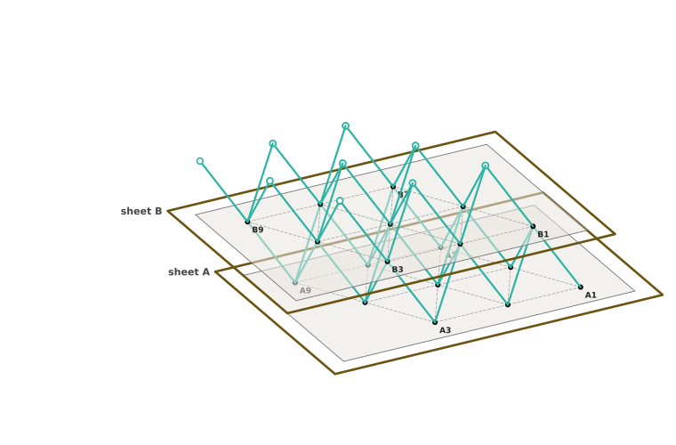
Step 7. Lace sheet C into its frame, hold it over B at about d with C1 over the point +8 st and +4⅔ ridges from B1, that is +16 st and +9⅓ ridges from A1, and sew cords 22–42 node by node:
Step 8. Weave in all ends. Remove the contrast threads, or leave them as node marks. The piece now looks like Figure T-c.1.
Step 9. Tension the piece and stand it on posts (see “Finishing”), then check it (below).
| count | expected |
|---|---|
| node stitches (9 per sheet) | 27 |
| cords (gap 1 + gap 2) | 42 (21 + 21) |
| gap 1 (A–B): tetrahedra on A · tetrahedra hanging from B · octahedra | 4 · 4 · 4 |
| gap 2 (B–C): tetrahedra on B · tetrahedra hanging from C · octahedra | 4 · 4 · 4 |
| plumb line from C1 meets sheet A | +16 st, +9⅓ ridges from A1 |
| cords per node | 1 | 2 | 3 | 4 | 5 | 6 | 7 | 8 | 9 | sum |
|---|---|---|---|---|---|---|---|---|---|---|
| sheet A | 1 | 2 | 2 | 2 | 3 | 3 | 2 | 3 | 3 | 21 |
| sheet B | 4 | 5 | 4 | 5 | 6 | 5 | 4 | 5 | 4 | 42 |
| sheet C | 3 | 3 | 2 | 3 | 3 | 2 | 2 | 2 | 1 | 21 |
This piece holds 8 tetrahedral pieces and 16 octahedral halves of sheet B; around node B5 the four pieces of one whole c-tile are all closed (checked against tiles.py of #75). The octahedra of gap 2 are set aside from those of gap 1 (c).
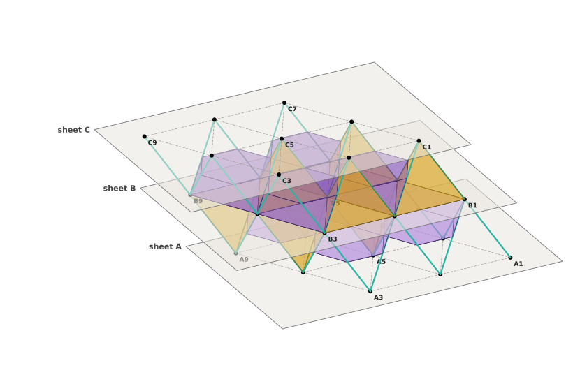
Three sheets A, B, A′: the top sheet A′ lies straight over A. The middle sheet B is h: each cord up from a B node is the mirror image of a cord coming down into it, so the cords turn back in a chevron. This is the start of the hexagonal stacking 2H. The cells around B are the pieces of the HexOct h-tile (#75, at λ = −1/8). Sizes of every piece are in the table “Sizes of a finished piece” (Techniques); for T-h:
| T-h | |
|---|---|
| sheets · node stitches · cords | 3 · 27 · 42 |
| height (2d + one sheet thickness) | 12.2 cm |
| top sheet A′ over sheet A | straight over, 0 cm sideways |
| cells closed by sheets and cords | 16 tetrahedra, 8 octahedra |
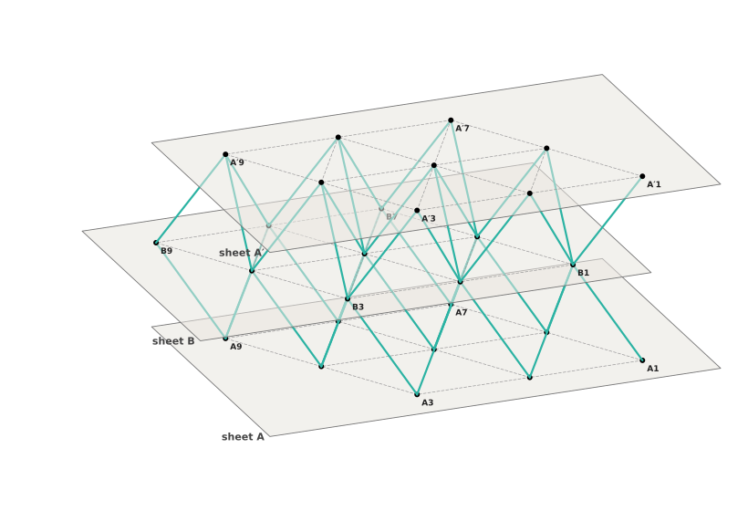
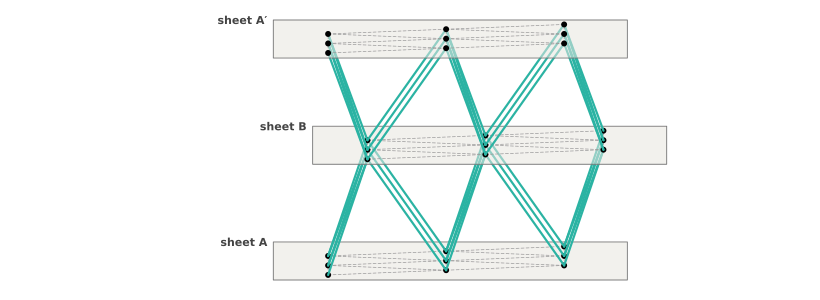
Three sheets knitted as in “The sheet”, tagged A, B and A′; yarn for 42 cords; the materials listed at the front for one piece.
The stacking is not knitted in: the cords set it when the piece is tensioned. The table and the plan show where each sheet ends up, so that you can hold each sheet near its place while you sew, and check the piece at the end.
| sheet | place | step from the sheet below | node 1 seen from above, from A1 |
|---|---|---|---|
| A | bottom | reference | |
| B | middle | forward | +8 st, +4⅔ r (4.2 cm) |
| A′ | top | backward | straight over A1 |
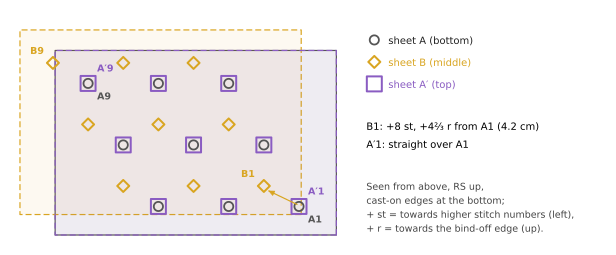
Step 1. Check the three sheets: each has 9 node stitches with a contrast thread, and a tag (A, B, A′).
Step 2. Lace sheet A into its frame, RS up, cast-on edge towards you (see “Lacing a sheet into its frame”). Check the node triangles: a = 7.3 cm.
Step 3. Work cords 1–21 from the nodes of sheet A, in the order of the table (see “Making a cord”). Knit each to the same row count; pin its 3 live sts and tag it with its number and target node. Tick each cord off in the “done” column.
| Gap 1: sheet A → sheet B (forward step), cords 1–21 | ||||
|---|---|---|---|---|
| cord | from | to | top end lies | done |
| 1 | A1 | B1 | +8 st, +4⅔ r | ☐ |
| 2 | A2 | B1 | −8 st, +4⅔ r | ☐ |
| 3 | A2 | B2 | +8 st, +4⅔ r | ☐ |
| 4 | A3 | B2 | −8 st, +4⅔ r | ☐ |
| 5 | A3 | B3 | +8 st, +4⅔ r | ☐ |
| 6 | A4 | B1 | 0 st, −9⅓ r | ☐ |
| 7 | A4 | B4 | +8 st, +4⅔ r | ☐ |
| 8 | A5 | B2 | 0 st, −9⅓ r | ☐ |
| 9 | A5 | B4 | −8 st, +4⅔ r | ☐ |
| 10 | A5 | B5 | +8 st, +4⅔ r | ☐ |
| 11 | A6 | B3 | 0 st, −9⅓ r | ☐ |
| Gap 1: sheet A → sheet B (forward step), cords 1–21 | ||||
|---|---|---|---|---|
| cord | from | to | top end lies | done |
| 12 | A6 | B5 | −8 st, +4⅔ r | ☐ |
| 13 | A6 | B6 | +8 st, +4⅔ r | ☐ |
| 14 | A7 | B4 | 0 st, −9⅓ r | ☐ |
| 15 | A7 | B7 | +8 st, +4⅔ r | ☐ |
| 16 | A8 | B5 | 0 st, −9⅓ r | ☐ |
| 17 | A8 | B7 | −8 st, +4⅔ r | ☐ |
| 18 | A8 | B8 | +8 st, +4⅔ r | ☐ |
| 19 | A9 | B6 | 0 st, −9⅓ r | ☐ |
| 20 | A9 | B8 | −8 st, +4⅔ r | ☐ |
| 21 | A9 | B9 | +8 st, +4⅔ r | ☐ |
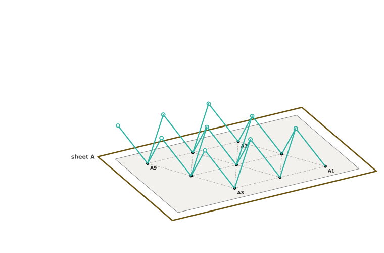
Step 4. Lace sheet B into its frame the same way and hold it over sheet A, about d = 5.9 cm above, with B1 over the point +8 st and +4⅔ ridges from A1 (Figure T-h.3).
Step 5. Sew cords 1–21 to sheet B, node by node (see “Sewing a cord to a node”). Each node of B receives these cords:
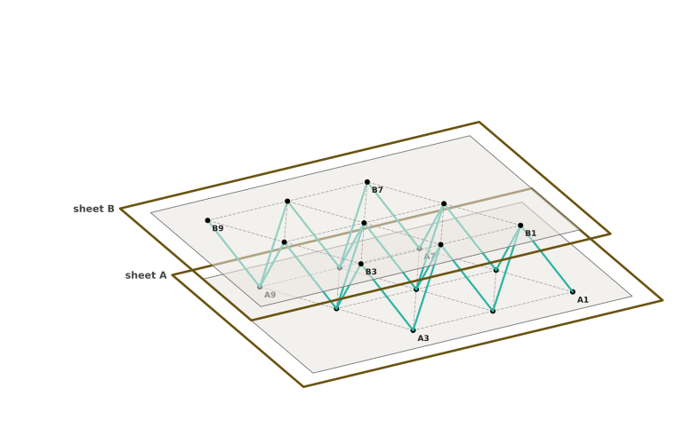
Step 6. Work cords 22–42 from the nodes of sheet B, on its RS (gap 2: backward step), pin and tag them. Their top ends lean back, over the nodes of A: this is the h turn at B.
| Gap 2: sheet B → sheet A′ (backward step), cords 22–42 | ||||
|---|---|---|---|---|
| cord | from | to | top end lies | done |
| 22 | B1 | A′1 | −8 st, −4⅔ r | ☐ |
| 23 | B1 | A′2 | +8 st, −4⅔ r | ☐ |
| 24 | B1 | A′4 | 0 st, +9⅓ r | ☐ |
| 25 | B2 | A′2 | −8 st, −4⅔ r | ☐ |
| 26 | B2 | A′3 | +8 st, −4⅔ r | ☐ |
| 27 | B2 | A′5 | 0 st, +9⅓ r | ☐ |
| 28 | B3 | A′3 | −8 st, −4⅔ r | ☐ |
| 29 | B3 | A′6 | 0 st, +9⅓ r | ☐ |
| 30 | B4 | A′4 | −8 st, −4⅔ r | ☐ |
| 31 | B4 | A′5 | +8 st, −4⅔ r | ☐ |
| 32 | B4 | A′7 | 0 st, +9⅓ r | ☐ |
| Gap 2: sheet B → sheet A′ (backward step), cords 22–42 | ||||
|---|---|---|---|---|
| cord | from | to | top end lies | done |
| 33 | B5 | A′5 | −8 st, −4⅔ r | ☐ |
| 34 | B5 | A′6 | +8 st, −4⅔ r | ☐ |
| 35 | B5 | A′8 | 0 st, +9⅓ r | ☐ |
| 36 | B6 | A′6 | −8 st, −4⅔ r | ☐ |
| 37 | B6 | A′9 | 0 st, +9⅓ r | ☐ |
| 38 | B7 | A′7 | −8 st, −4⅔ r | ☐ |
| 39 | B7 | A′8 | +8 st, −4⅔ r | ☐ |
| 40 | B8 | A′8 | −8 st, −4⅔ r | ☐ |
| 41 | B8 | A′9 | +8 st, −4⅔ r | ☐ |
| 42 | B9 | A′9 | −8 st, −4⅔ r | ☐ |
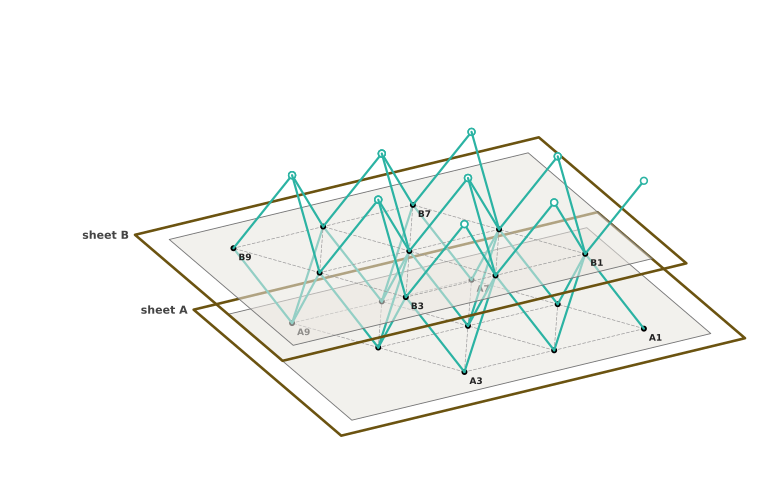
Step 7. Lace sheet A′ into its frame, hold it over B at about d with A′1 over the point −8 st and −4⅔ ridges from B1, straight over A1, and sew cords 22–42 node by node:
Step 8. Weave in all ends. Remove the contrast threads, or leave them as node marks. The piece now looks like Figure T-h.1.
Step 9. Tension the piece and stand it on posts (see “Finishing”), then check it (below).
| count | expected |
|---|---|
| node stitches (9 per sheet) | 27 |
| cords (gap 1 + gap 2) | 42 (21 + 21) |
| gap 1 (A–B): tetrahedra on A · tetrahedra hanging from B · octahedra | 4 · 4 · 4 |
| gap 2 (B–A′): tetrahedra on B · tetrahedra hanging from A′ · octahedra | 4 · 4 · 4 |
| plumb line from A′1 meets sheet A | on A1 |
| cords per node | 1 | 2 | 3 | 4 | 5 | 6 | 7 | 8 | 9 | sum |
|---|---|---|---|---|---|---|---|---|---|---|
| sheet A | 1 | 2 | 2 | 2 | 3 | 3 | 2 | 3 | 3 | 21 |
| sheet B | 6 | 6 | 4 | 6 | 6 | 4 | 4 | 4 | 2 | 42 |
| sheet A′ | 1 | 2 | 2 | 2 | 3 | 3 | 2 | 3 | 3 | 21 |
This piece holds 8 tetrahedral pieces and 16 octahedral halves of sheet B; around node B5 the four pieces of one whole h-tile are all closed (checked against tiles.py of #75). The octahedra of gap 2 sit straight over those of gap 1 (h).
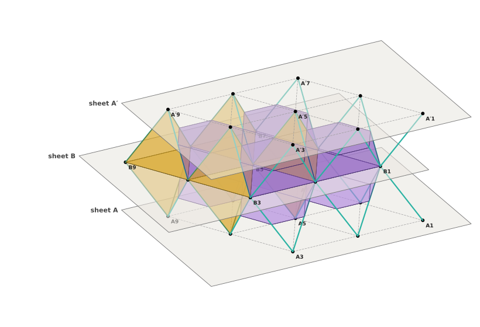
T-c and T-h differ only in the second gap: in T-c it is a forward step, as the first; in T-h it is a backward step. Seen from the side, the cords of T-c run on through B in one straight line; those of T-h fold back at B like a chevron, and A′ comes to lie over A. Seen from above at a node of B, the three cords up from B in T-c point opposite to the three cords coming down; in T-h they lie over them.
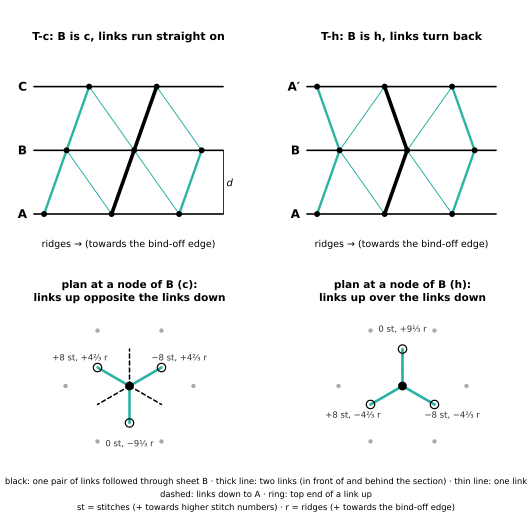
T-c and T-h are the smallest pieces of two stackings. Any close-packed stacking can be knitted the same way, because every sheet is the same knit (“The sheet”). Only the cords decide where a sheet goes. In each gap the cords make either a forward step (the upper sheet moves on by +8 st and +4⅔ ridges: A → B, B → C, C → A) or a backward step (−8 st and −4⅔ ridges: B → A, C → B, A → C). An inner sheet is c when the steps below and above it are the same: its cords run straight on. It is h when they differ: its cords turn back in a chevron. So the c/h word of the inner sheets decides the whole stack. The stacking sequences below are the five of #83 (DICTO's HexOct: Knitting Crystals); there they were flat swatches, here each is a three-dimensional HexOct structure of sheets and cords.
Growing the Fibonacci word. Start with a. Replace every a by ab and every b by a, and repeat: a, ab, aba, abaab, abaababa, abaababaabaab. Then write c for a and h for b: chcchchcchcch. #83 uses these 13 letters as the labels of 13 layers, the end layers included as if the stack went on. In a knitted stack of 13 sheets the 11 inner sheets carry letters 2–12, hcchchcchcc, and the rule gives the sheet letters ABACBCACBABCA, the word printed in #83. (The end labels have no effect on the knitting: no cords go beyond the end sheets.)
| sequence | c/h in #83 | sheet letters | inner sheets | sheets | cords | steps, gap 1 up | mean step |
|---|---|---|---|---|---|---|---|
| 3C | all c | ABCABCA | ccccc | 7 | 126 | ++++++ | +1.00 |
| 2H | all h | ABABA | hhh | 5 | 84 | +−+− | +0.00 |
| 4H | hchch | ABCBA | chc | 5 | 84 | ++−− | +0.00 |
| 6H | hcchcc | ABCACBA | cchcc | 7 | 126 | +++−−− | +0.00 |
| Fibonacci | chcchchcchcch | ABACBCACBABCA | hcchchcchcc | 13 | 252 | +−−−++−−−+++ | +0.00 |
Mean step: (forward − backward) / gaps, the net c-twist (mean Hägg symbol) of #83 part 2, for these stacks. Every word here was checked by script against #83: the c/h of each sheet, the rule rebuilding the letters, and the Fibonacci growth; the 12-sheet words of #83 part 2 were checked too (c/h and mean Hägg symbol).
The steps are those of T-c and T-h, gap by gap from the bottom up. Techniques as in the shared section.
All inner sheets c: every gap is a forward step. A followed cord path runs straight through the whole stack in one slant, and every sheet moves on by the same step, so the stack leans. #83 writes it ABCABCA (all c).
| 3C | |
|---|---|
| sheets (each knitted as in “The sheet”) · node stitches | 7 · 63 |
| cords (21 per gap × 6 gaps) | 126 |
| gaps: forward · backward | 6 · 0 |
| height (6d + one sheet thickness) | 36.0 cm |
| yarn, estimate (about 55 m per sheet and 1 m per cord) | about 511 m (6 balls of 50 g) |
| contrast threads · frames · posts (4 per gap) · safety pins (reused each gap) | 63 · 7 · 24 · 21 |
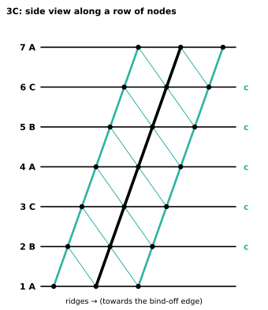
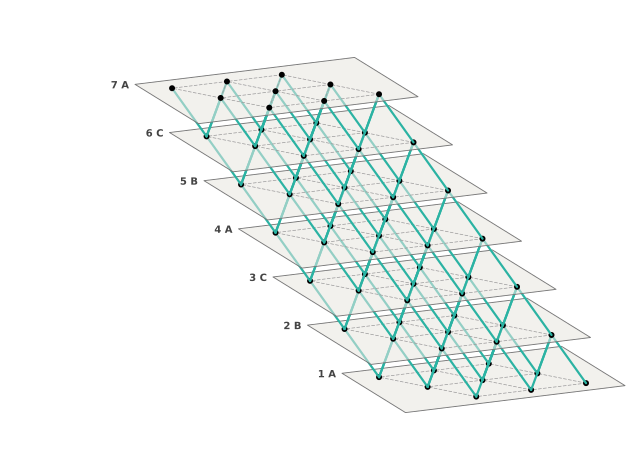
| sheet | letter | c / h | step from below | node 1 from sheet 1 node 1 (from above) |
|---|---|---|---|---|
| 1 | A | end | reference | |
| 2 | B | c | forward | +8 st, +4⅔ r (4.2 cm) |
| 3 | C | c | forward | +16 st, +9⅓ r (8.4 cm) |
| 4 | A | c | forward | +24 st, +14 r (12.6 cm) |
| 5 | B | c | forward | +32 st, +18⅔ r (16.8 cm) |
| 6 | C | c | forward | +40 st, +23⅓ r (21.0 cm) |
| 7 | A | end | forward | +48 st, +28 r (25.2 cm) |
| gap | sheets | step | cord rule (node n below → nodes above) | cords | count | tet up · tet down · oct |
|---|---|---|---|---|---|---|
| 1 | 1 A → 2 B | forward | n → n, n−1, n−3 | 1–21 | 21 | 4 · 4 · 4 |
| 2 | 2 B → 3 C | forward | n → n, n−1, n−3 | 22–42 | 21 | 4 · 4 · 4 |
| 3 | 3 C → 4 A | forward | n → n, n−1, n−3 | 43–63 | 21 | 4 · 4 · 4 |
| 4 | 4 A → 5 B | forward | n → n, n−1, n−3 | 64–84 | 21 | 4 · 4 · 4 |
| 5 | 5 B → 6 C | forward | n → n, n−1, n−3 | 85–105 | 21 | 4 · 4 · 4 |
| 6 | 6 C → 7 A | forward | n → n, n−1, n−3 | 106–126 | 21 | 4 · 4 · 4 |
Check. 63 node stitches; 126 cords, 21 in every gap; every gap closes 4 tetrahedra standing on its lower sheet, 4 hanging from its upper sheet and 4 octahedra; the cords per node add up to 252. All of this is generated and asserted by patterns.py, and the c/h word is checked against #83.
All inner sheets h: forward and backward steps alternate. Every followed cord path turns back at every inner sheet, a column of chevrons; sheets 1, 3 and 5 lie straight over one another. #83 writes it ABABA (all h).
| 2H | |
|---|---|
| sheets (each knitted as in “The sheet”) · node stitches | 5 · 45 |
| cords (21 per gap × 4 gaps) | 84 |
| gaps: forward · backward | 2 · 2 |
| height (4d + one sheet thickness) | 24.1 cm |
| yarn, estimate (about 55 m per sheet and 1 m per cord) | about 359 m (4 balls of 50 g) |
| contrast threads · frames · posts (4 per gap) · safety pins (reused each gap) | 45 · 5 · 16 · 21 |
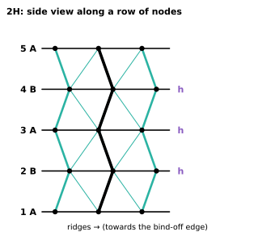
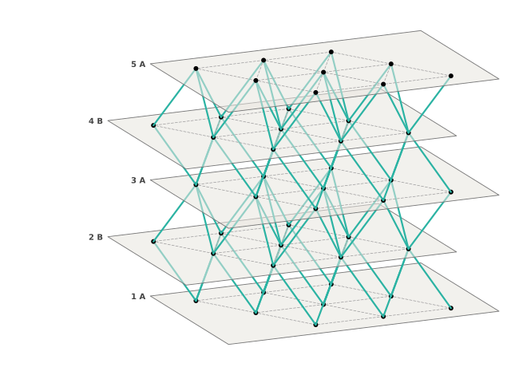
| sheet | letter | c / h | step from below | node 1 from sheet 1 node 1 (from above) |
|---|---|---|---|---|
| 1 | A | end | reference | |
| 2 | B | h | forward | +8 st, +4⅔ r (4.2 cm) |
| 3 | A | h | backward | straight over sheet 1 |
| 4 | B | h | forward | +8 st, +4⅔ r (4.2 cm) |
| 5 | A | end | backward | straight over sheet 1 |
| gap | sheets | step | cord rule (node n below → nodes above) | cords | count | tet up · tet down · oct |
|---|---|---|---|---|---|---|
| 1 | 1 A → 2 B | forward | n → n, n−1, n−3 | 1–21 | 21 | 4 · 4 · 4 |
| 2 | 2 B → 3 A | backward | n → n, n+1, n+3 | 22–42 | 21 | 4 · 4 · 4 |
| 3 | 3 A → 4 B | forward | n → n, n−1, n−3 | 43–63 | 21 | 4 · 4 · 4 |
| 4 | 4 B → 5 A | backward | n → n, n+1, n+3 | 64–84 | 21 | 4 · 4 · 4 |
Check. 45 node stitches; 84 cords, 21 in every gap; every gap closes 4 tetrahedra standing on its lower sheet, 4 hanging from its upper sheet and 4 octahedra; the cords per node add up to 168. All of this is generated and asserted by patterns.py, and the c/h word is checked against #83.
c and h alternate: two forward steps, then two backward steps. Cord paths slant two gaps one way, then two gaps back; sheet 5 lies straight over sheet 1. #83 writes it ABCBA (hchch).
| 4H | |
|---|---|
| sheets (each knitted as in “The sheet”) · node stitches | 5 · 45 |
| cords (21 per gap × 4 gaps) | 84 |
| gaps: forward · backward | 2 · 2 |
| height (4d + one sheet thickness) | 24.1 cm |
| yarn, estimate (about 55 m per sheet and 1 m per cord) | about 359 m (4 balls of 50 g) |
| contrast threads · frames · posts (4 per gap) · safety pins (reused each gap) | 45 · 5 · 16 · 21 |
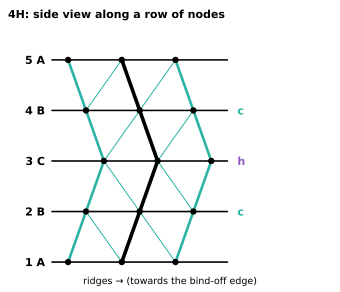
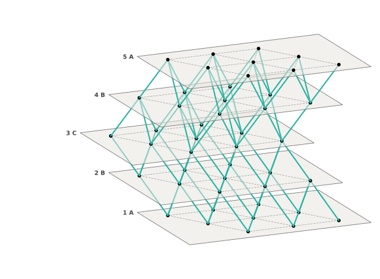
| sheet | letter | c / h | step from below | node 1 from sheet 1 node 1 (from above) |
|---|---|---|---|---|
| 1 | A | end | reference | |
| 2 | B | c | forward | +8 st, +4⅔ r (4.2 cm) |
| 3 | C | h | forward | +16 st, +9⅓ r (8.4 cm) |
| 4 | B | c | backward | +8 st, +4⅔ r (4.2 cm) |
| 5 | A | end | backward | straight over sheet 1 |
| gap | sheets | step | cord rule (node n below → nodes above) | cords | count | tet up · tet down · oct |
|---|---|---|---|---|---|---|
| 1 | 1 A → 2 B | forward | n → n, n−1, n−3 | 1–21 | 21 | 4 · 4 · 4 |
| 2 | 2 B → 3 C | forward | n → n, n−1, n−3 | 22–42 | 21 | 4 · 4 · 4 |
| 3 | 3 C → 4 B | backward | n → n, n+1, n+3 | 43–63 | 21 | 4 · 4 · 4 |
| 4 | 4 B → 5 A | backward | n → n, n+1, n+3 | 64–84 | 21 | 4 · 4 · 4 |
Check. 45 node stitches; 84 cords, 21 in every gap; every gap closes 4 tetrahedra standing on its lower sheet, 4 hanging from its upper sheet and 4 octahedra; the cords per node add up to 168. All of this is generated and asserted by patterns.py, and the c/h word is checked against #83.
h, c, c repeating: three forward steps, then three backward steps. Cord paths slant three gaps one way, then three back; sheet 7 lies straight over sheet 1. #83 writes it ABCACBA (hcchcc).
| 6H | |
|---|---|
| sheets (each knitted as in “The sheet”) · node stitches | 7 · 63 |
| cords (21 per gap × 6 gaps) | 126 |
| gaps: forward · backward | 3 · 3 |
| height (6d + one sheet thickness) | 36.0 cm |
| yarn, estimate (about 55 m per sheet and 1 m per cord) | about 511 m (6 balls of 50 g) |
| contrast threads · frames · posts (4 per gap) · safety pins (reused each gap) | 63 · 7 · 24 · 21 |
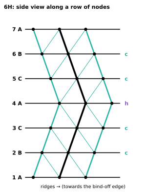
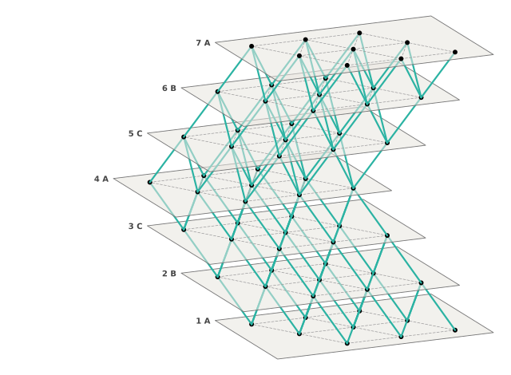
| sheet | letter | c / h | step from below | node 1 from sheet 1 node 1 (from above) |
|---|---|---|---|---|
| 1 | A | end | reference | |
| 2 | B | c | forward | +8 st, +4⅔ r (4.2 cm) |
| 3 | C | c | forward | +16 st, +9⅓ r (8.4 cm) |
| 4 | A | h | forward | +24 st, +14 r (12.6 cm) |
| 5 | C | c | backward | +16 st, +9⅓ r (8.4 cm) |
| 6 | B | c | backward | +8 st, +4⅔ r (4.2 cm) |
| 7 | A | end | backward | straight over sheet 1 |
| gap | sheets | step | cord rule (node n below → nodes above) | cords | count | tet up · tet down · oct |
|---|---|---|---|---|---|---|
| 1 | 1 A → 2 B | forward | n → n, n−1, n−3 | 1–21 | 21 | 4 · 4 · 4 |
| 2 | 2 B → 3 C | forward | n → n, n−1, n−3 | 22–42 | 21 | 4 · 4 · 4 |
| 3 | 3 C → 4 A | forward | n → n, n−1, n−3 | 43–63 | 21 | 4 · 4 · 4 |
| 4 | 4 A → 5 C | backward | n → n, n+1, n+3 | 64–84 | 21 | 4 · 4 · 4 |
| 5 | 5 C → 6 B | backward | n → n, n+1, n+3 | 85–105 | 21 | 4 · 4 · 4 |
| 6 | 6 B → 7 A | backward | n → n, n+1, n+3 | 106–126 | 21 | 4 · 4 · 4 |
Check. 63 node stitches; 126 cords, 21 in every gap; every gap closes 4 tetrahedra standing on its lower sheet, 4 hanging from its upper sheet and 4 octahedra; the cords per node add up to 252. All of this is generated and asserted by patterns.py, and the c/h word is checked against #83.
The Fibonacci order of c and h: runs of equal steps of lengths 1, 3, 2, 3, 3 that never settle into a period. Cord paths wander but stay near the middle. #83 writes it ABACBCACBABCA (chcchchcchcch).
| Fibonacci | |
|---|---|
| sheets (each knitted as in “The sheet”) · node stitches | 13 · 117 |
| cords (21 per gap × 12 gaps) | 252 |
| gaps: forward · backward | 6 · 6 |
| height (12d + one sheet thickness) | 71.6 cm |
| yarn, estimate (about 55 m per sheet and 1 m per cord) | about 967 m (10 balls of 50 g) |
| contrast threads · frames · posts (4 per gap) · safety pins (reused each gap) | 117 · 13 · 48 · 21 |
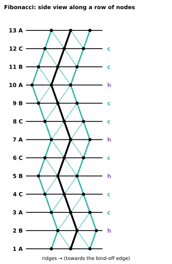
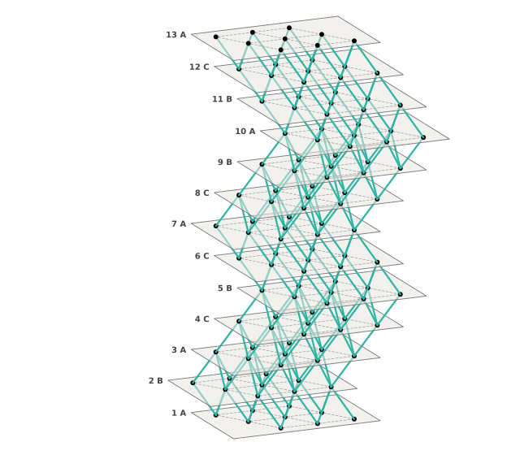
| sheet | letter | c / h | step from below | node 1 from sheet 1 node 1 (from above) |
|---|---|---|---|---|
| 1 | A | end | reference | |
| 2 | B | h | forward | +8 st, +4⅔ r (4.2 cm) |
| 3 | A | c | backward | straight over sheet 1 |
| 4 | C | c | backward | −8 st, −4⅔ r (4.2 cm) |
| 5 | B | h | backward | −16 st, −9⅓ r (8.4 cm) |
| 6 | C | c | forward | −8 st, −4⅔ r (4.2 cm) |
| 7 | A | h | forward | straight over sheet 1 |
| 8 | C | c | backward | −8 st, −4⅔ r (4.2 cm) |
| 9 | B | c | backward | −16 st, −9⅓ r (8.4 cm) |
| 10 | A | h | backward | −24 st, −14 r (12.6 cm) |
| 11 | B | c | forward | −16 st, −9⅓ r (8.4 cm) |
| 12 | C | c | forward | −8 st, −4⅔ r (4.2 cm) |
| 13 | A | end | forward | straight over sheet 1 |
| gap | sheets | step | cord rule (node n below → nodes above) | cords | count | tet up · tet down · oct |
|---|---|---|---|---|---|---|
| 1 | 1 A → 2 B | forward | n → n, n−1, n−3 | 1–21 | 21 | 4 · 4 · 4 |
| 2 | 2 B → 3 A | backward | n → n, n+1, n+3 | 22–42 | 21 | 4 · 4 · 4 |
| 3 | 3 A → 4 C | backward | n → n, n+1, n+3 | 43–63 | 21 | 4 · 4 · 4 |
| 4 | 4 C → 5 B | backward | n → n, n+1, n+3 | 64–84 | 21 | 4 · 4 · 4 |
| 5 | 5 B → 6 C | forward | n → n, n−1, n−3 | 85–105 | 21 | 4 · 4 · 4 |
| 6 | 6 C → 7 A | forward | n → n, n−1, n−3 | 106–126 | 21 | 4 · 4 · 4 |
| 7 | 7 A → 8 C | backward | n → n, n+1, n+3 | 127–147 | 21 | 4 · 4 · 4 |
| 8 | 8 C → 9 B | backward | n → n, n+1, n+3 | 148–168 | 21 | 4 · 4 · 4 |
| 9 | 9 B → 10 A | backward | n → n, n+1, n+3 | 169–189 | 21 | 4 · 4 · 4 |
| 10 | 10 A → 11 B | forward | n → n, n−1, n−3 | 190–210 | 21 | 4 · 4 · 4 |
| 11 | 11 B → 12 C | forward | n → n, n−1, n−3 | 211–231 | 21 | 4 · 4 · 4 |
| 12 | 12 C → 13 A | forward | n → n, n−1, n−3 | 232–252 | 21 | 4 · 4 · 4 |
Check. 117 node stitches; 252 cords, 21 in every gap; every gap closes 4 tetrahedra standing on its lower sheet, 4 hanging from its upper sheet and 4 octahedra; the cords per node add up to 504. All of this is generated and asserted by patterns.py, and the c/h word is checked against #83.
#83 part 2 (“Knitted HexOct: c/h as a design dial”) tested the stackings in an idealised model: straight rods for the cords meeting at the nodes, blocks of 12 sheets, periodic sideways. All cord lengths, angles and node counts are the same in every stacking, so every stacking has the same density.
The same in every sequence. Pressing down through the thickness: the compression stiffness, the strain at which the first cords buckle, and the work done in compression are the same in 3C, 2H, 4H, 6H and the Fibonacci stack (to 4 digits). Through-thickness stiffness does not tell the stackings apart.
What changes.
These are model results, not measurements: no yarn mechanics (loops, friction, cords that cannot carry compression), and small 3 × 3-node pieces have edges that the periodic model does not. The pieces in this booklet are the physical tests that #83 part 2 asks for; none has been knitted yet.